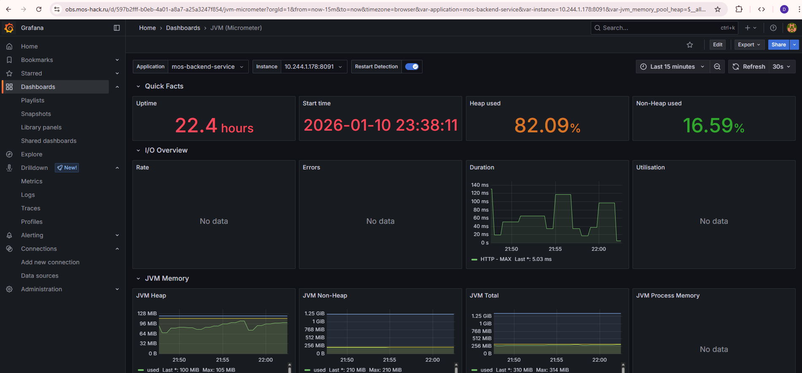
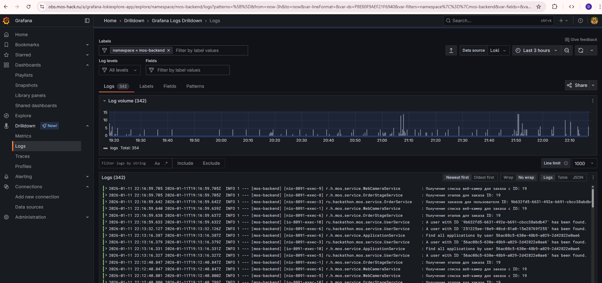

Введение
Введение
Документация по проекту, созданному в рамках практической работы 2 курса магистратуры по специальности "Разработка программного обеспечения" НИЯУ МИФИ.
Цель проекта
Создание современного веб-приложения для решения задачи обеспечения полного цикла заказа и строительства объектов индивидуального жилищного строительства.
Технологический стек
Команда
Проект разрабатывается командой из 5 человек с распределением ролей:
Задание
Партнёр предлагает разработать мобильное приложение или сайт, которые обеспечивают полный цикл заказа и строительства объектов индивидуального жилищного строительства (ИЖС).
Сервис должен поддерживать весь путь заказчика — от выбора проекта до завершения строительства и подписания финальных документов.
Целевая аудитория
- Люди, которые хотят заказать строительство объекта ИЖС.
- Пользователи, которым нужен единый цифровой инструмент для выбора проекта, согласования документов, наблюдения за ходом стройки и завершения всех формальных процедур.
Основные задачи на хакатоне
Команда должна реализовать пользовательский путь, описанный в брифе.
-
Выбор проекта.
Пользователь заходит в систему, выбирает проект и отправляет запрос на его строительство.
-
Согласование документации.
Пользователь проходит этап согласования документов через систему.
-
Этап строительства.
- Отображение видеопотока со стройки.
- Общение в чате со специалистом.
-
Завершение строительства.
Подписание всех оставшихся документов после окончания строительства.
Ожидаемый результат
По итогам выполнения кейса участники должны представить:
- Мобильное приложение или сайт, которые реализуют описанный путь пользователя: выбор проекта → согласование документации → просмотр видеопотока и чат → подписание документов.
- Прототип, демонстрацию или рабочую версию, в которой этот путь можно воспроизвести.
Участники должны учитывать все этапы, указанные в брифе.
Рекомендации для участников
- Внимательно придерживайтесь четырёх этапов пользовательского пути, указанного партнёром.
- Используйте аналог как пример структуры и визуального решения.
- Сосредоточьтесь на том, чтобы все этапы были последовательно связаны между собой.
- Обеспечьте возможность продемонстрировать путь пользователя от начала до конца.
- Не выходите за рамки брифа — реализуйте только то, что прямо указано партнёром.
Финальные артефакты
- Прототип мобильного приложения или сайта: отражает весь путь — выбор проекта → согласование документов → стройка (видео + чат) → подписание документов.
- Демонстрация пользовательского сценария: видео или презентация с проходом всех этапов.
- Краткое описание решения: как реализованы четыре шага из брифа.
- Набор экранов/макетов: все ключевые этапы пользовательского пути.
Глоссарий
Определения ключевых терминов, используемых в проекте:
Клиент
Физическое или юридическое лицо (Заказчик), выразившее намерение заключить договор подряда на выполнение работ по индивидуальному жилищному строительству (ИЖС) с Исполнителем.
Проект (Типовой/Архитектурный проект)
Утверждённый комплект проектно-сметной документации, включающий архитектурные, конструктивные и инженерные разделы, а также визуализации объекта. Является основным коммерческим предложением и базой для формирования Заказа.
Заявка
Формализованное обращение Клиента, содержащее выбранный Проект и реквизиты для связи. Инициирует процесс предварительного рассмотрения возможности заключения договора.
Статус заявки
Атрибут, определяющий текущее состояние обработки Заявки в рабочем процессе Компании.
- Создана — Заявка зарегистрирована в системе.
- На рассмотрении — Заявка находится в работе у ответственного Менеджера.
- По Заявке принято положительное решение, инициировано создание Заказа.
- По Заявке принято отрицательное решение с указанием причины.
Менеджер проекта
Уполномоченный сотрудник Компании (Исполнителя), ответственный за взаимодействие с Клиентом, администрирование коммерческих условий, координацию этапов работ и ведение документации в рамках конкретного Заказа.
Заказ
Основной учётный объект, представляющий собой совокупность данных о выполняемых работах по конкретному объекту Клиента. Содержит ссылку на Проект, документацию, историю коммуникаций, данные о ходе строительства и является юридическим и финансовым отражением Договора подряда в информационной системе.
Статус заказа
Атрибут, отражающий текущую фазу исполнения Заказа в соответствии с утверждённым проектом и календарным планом.
- Новый заказ — Заказ создан, ведутся подготовительные и организационные работы.
- Подготовка документации — Формирование и согласование пакета разрешительной и рабочей документации.
- Строительство — На объекте ведутся активные строительно-монтажные работы (детализируются Этапами строительства).
- Завершение работ — Выполнены основные работы, идёт процесс финальных согласований, устранения замечаний, подготовки к сдаче.
- Заказ закрыт — Объект сдан Клиенту, все обязательства исполнены, акты подписаны.
- Заказ отменен — Исполнение Заказа прекращено на основании расторжения Договора.
Этап строительства
Конкретный технологический процесс или комплекс работ в рамках статуса Заказа «Строительство». Служит для детального планирования, контроля и отчётности о ходе строительно-монтажных работ
Перечень этапов строительства:
- Подготовка участка: расчистка и разметка.
- Земляные работы: разработка котлована и траншей.
- Заливка фундамента.
- Возведение стен.
- Устройство межэтажных перекрытий и лестниц.
- Монтаж кровли.
- Установка окон и дверей.
- Наружная отделка и утепление фасада.
- Дополнительное утепление наружных стен.
- Электромонтажные работы.
- Сантехнические работы.
- Монтаж отопления и вентиляции.
- Выравнивание стен и потолков.
- Финишная внутренняя отделка.
- Укладка напольных покрытий.
- Покраска и декорирование помещений.
- Благоустройство территории.
Сценарий использования: Общая
Назначение системы
Система автоматизации строительной компании ИЖС управляет полным циклом взаимодействия с клиентами: от выбора проекта до завершения строительства.
Ключевые роли
Заказчик, желающий построить дом
Сотрудник компании, обрабатывающий заявки и ведущий заказы
Основной бизнес-процесс
с контактами] C --> D{Менеджер связывается
с клиентом} D --> E[Создается заказ] D --> F[Заявка отклонена] E --> G[Выполняется строительство] G --> H[Заказ завершен]
Сценарий использования: Пользователь
Основные сценарии работы с пользователями
1. Регистрация пользователя
2. Авторизация
3. Редактирование профиля
Сценарий использования: Шаблон проекта
Управление проектами
Доступ по ролям
| Действие | Гость | Клиент | Менеджер |
|---|---|---|---|
| Просмотр активных проектов | |||
| Просмотр неактивных | |||
| Создание проекта | |||
| Редактирование проекта | |||
| Удаление проекта |
1. Создание проекта (только менеджер)
- Переход на главную страницу → "Создать шаблон"
- Заполнение данных: название, описание, характеристики
- Загрузка изображений и технической документации
- Указание статуса: Активен или Неактивен
- Сохранение проекта
2. Редактирование проекта
- Выбор проекта из списка
- Нажатие "Редактировать"
- Внесение изменений
- Обновление файлов при необходимости
- Сохранение изменений
3. Смена статуса
Проект виден всем пользователям, включая неавторизованных
Проект виден только менеджерам в административном интерфейсе
4. Удаление проекта
- Выбор проекта → "Удалить"
- Подтверждение действия
- Проверка отсутствия активных заявок на проект
- Удаление проекта из системы
Сценарий использования: Заявка
Жизненный цикл заявки
Клиент оставил заявку] --> B[В рассмотрении
Менеджер связывается] B --> C{Решение} C -->|Принято| D[Принята
Создается заказ] C -->|Отклонено| E[Отклонена
Заявка не принята]
1. Создание заявки (Клиент)
- Просмотр каталога активных проектов
- Выбор проекта → "Оставить заявку"
- Передача контактных данных
- Нажатие "Отправить заявку"
- Происходит создание заявки со статусом "Создана"
- Происходит добавление заявки в список новых заявок (для Менеджер)
2. Взятие в работу (Менеджер)
- Просмотр списка новых заявок
- Выбор заявки → "Взять в работу"
- Происходит смена статуса на "В рассмотрении"
- Связь с клиентом по предоставленным контактам
- Уточнение деталей и обсуждение условий
3. Принятие заявки (Менеджер)
- После согласования с клиентом
- Нажатие "Принять заявку"
- Подтверждение действия
- Происходит смена статуса на "Принята"
- Происходит автоматическое создание Заказа
4. Отклонение заявки (Менеджер)
- Нажатие "Отклонить заявку"
- Подтверждение действия
- Происходит смена статуса на "Отклонена"
- Причина отклонения обсуждается с клиентом вне системы
Сценарий использования: Заказ
Жизненный цикл заказа
Статус: Новый заказ] A --> B[Менеджер
Согласование предварительной сметы и условий с клиентом] B --> C{Клиент cогласен?} C -->|Да| D[Менеджер продолжает работу с клиентом
Статус: Подготовка документации] C -->|Нет| E[Менеджер отменяет заказ
Cтатус: Заказ отменен] D --> F[Менеджер
Подбор подходящего участка совместно с клиентом] F --> G[Менеджер
Проверка документов на землю и подготовка документации] G --> H[Клиент
Подписание документации и внесение оплаты] H --> I[Менеджер
Получение разрешения на строительство] I --> J[Старт строительных работ
Cтатус: Строительство] J --> K[Менеджер
Планирование и запуск строительных работ по этапу] K --> L[Клиент
Отслеживание хода строительных работ через камеры] L --> M[Клиент
Связь с менеджером/прорабом в чате] M --> N[Приемка этапа клиентом
подтверждение в чате/подписание акта] N --> O{Строительные работы
завершены?} O -->|Нет| K[Менеджер
Планирование и запуск строительных работ по этапу] O -->|Да| P[Все строительные этапы работ завершены
Cтатус: Завершение работ] P --> R[Клиент
Финальная приемка готового жилья, замечания] R --> S[Менеджер
Устранение замечаний, оформление актов сдачи-приемки] S --> T[Клиент
Подписание актов, финальная оплата] T --> U[Менеджер
Передача ключей и документации клиенту] U --> V[Заказ завершен
Статус: Заказ закрыт]
1. Создание заявки (Клиент)
- Просмотр каталога активных проектов
- Выбор проекта → "Оставить заявку"
- Передача контактных данных
- Нажатие "Отправить заявку"
- Происходит создание заявки со статусом "Создана"
- Происходит добавление заявки в список новых заявок (для Менеджер)
2. Взятие в работу (Менеджер)
- Просмотр списка новых заявок
- Выбор заявки → "Взять в работу"
- Происходит смена статуса на "В рассмотрении"
- Связь с клиентом по предоставленным контактам
- Уточнение деталей и обсуждение условий
3. Принятие заявки (Менеджер)
- После согласования с клиентом
- Нажатие "Принять заявку"
- Подтверждение действия
- Происходит смена статуса на "Принята"
- Происходит автоматическое создание Заказа
4. Отклонение заявки (Менеджер)
- Нажатие "Отклонить заявку"
- Подтверждение действия
- Происходит смена статуса на "Отклонена"
- Причина отклонения обсуждается с клиентом вне системы
Архитектура
Общая архитектура
Система построена по трехуровневой клиент-серверной архитектуре, развёрнутой в Kubernetes-кластере.
Spring Boot / Java 21] Keycloak[Keycloak
Сервис аутентификации] end subgraph "Хранение данных" PostgreSQL[(PostgreSQL
Бизнес-данные
Проекты, заявки, заказы)] end subgraph "Клиентская сторона" Browser[Веб-браузер
React SPA] end Browser -- "1. Аутентификация
(прямой OAuth2/OIDC flow)" --> Keycloak Keycloak -- "2. Возвращает JWT токен" --> Browser Browser -- "3. Все API-запросы с JWT в заголовке" --> Backend Backend -- "4. Валидация токена
(при необходимости)" --> Keycloak Backend -- "5. Работа с бизнес-данными" --> PostgreSQL Browser -- "6. Регистрация нового пользователя
POST /api/users" --> Backend Backend -- "7. Создание учётной записи
через Admin REST API" --> Keycloak Backend -- "8. Сохранение профиля пользователя" --> PostgreSQL
Компоненты системы
| Компонент | Назначение |
|---|---|
| Клиентское приложение (Frontend) | SPA на React, обслуживаемое отдельным веб-сервером. |
| Серверное приложение (Backend) | Монолитное Spring Boot приложение на Java 21. |
| Сервис аутентификации | Keycloak, отвечающий за управление учётными записями. |
| База данных | PostgreSQL для хранения бизнес-данных. |
Безопасность
1. Общий подход
Все компоненты взаимодействуют по защищённым каналам связи с использованием HTTPS. Аутентификация и авторизация централизованы через сервис Keycloak.
2. Защита передаваемых данных
- HTTPS повсеместно: Все коммуникации между компонентами шифруются с использованием TLS.
- Сертификаты: В Kubernetes-кластере настроена автоматическая выдача и обновление SSL-сертификатов (через Cert-Manager с Let's Encrypt).
- JWT-токены: Все API-запросы содержат подписанные JWT-токены в заголовке
3. Сервис аутентификации и авторизации (Keycloak)
- Realm: Создан отдельный realm hackathon для изоляции окружения.
- Клиенты:
- hackathon-cli — клиент для веб-приложения (публичный).
- hackathon-backend — клиент для серверного приложения (конфиденциальный).
4. Ролевая модель (RBAC)
Роли в Keycloak:
- hackathon.user — базовая роль для клиентов
- hackathon.manager — роль для менеджеров строительной компании
Применение ролей:
- Роли добавляются пользователям в Keycloak администратором
- JWT токен содержит список ролей пользователя
- Backend валидирует наличие необходимых ролей для доступа к эндпоинтам
- Frontend динамически изменяет интерфейс в зависимости от ролей пользователя
Пример JWT токена:
{
"exp": 1768154817,
"iat": 1768154517,
"jti": "onrtro:1214304c-9d88-4ce5-94d7-7ac3264c0e4f",
"iss": "https://auth.mos-hack.ru/realms/hackathon",
"aud": "account",
"sub": "9b632fd5-6631-492e-b691-cbcc38abdb47",
"typ": "Bearer",
"azp": "hackathon-cli",
"sid": "5ae40795-19fb-4f71-af99-e43694838d4d",
"acr": "1",
"allowed-origins": [
"*"
],
"realm_access": {
"roles": [
"offline_access",
"hackathon.user",
"uma_authorization",
"default-roles-hackathon"
]
},
"resource_access": {
"account": {
"roles": [
"manage-account",
"manage-account-links",
"view-profile"
]
}
},
"scope": "email profile",
"email_verified": true,
"roles": [
"ROLE_offline_access",
"ROLE_uma_authorization",
"ROLE_hackathon.user",
"ROLE_default-roles-hackathon",
"ROLE_manage-account",
"ROLE_view-profile",
"ROLE_manage-account-links"
],
"name": "user user",
"preferred_username": "user",
"given_name": "user",
"family_name": "user",
"email": "user@mail.com"
}Инфраструктура
1.1. Обзор инфраструктуры
Система развернута в собственноручно управляемом Kubernetes-кластере на виртуальных серверах облачного провайдера Beget.com. Архитектура построена на принципах GitOps с использованием Argo CD для автоматического развертывания.
1.2. Компоненты инфраструктуры
Вычислительные ресурсы:
| Компонент | Назначение |
|---|---|
| Control Plane | 1 мастер-нода |
| Worker Nodes | 2 worker-ноды для запуска рабочих нагрузок. |
Сервисы инфраструктуры:
| Компонент | Назначение |
|---|---|
| Argo CD | GitOps-оператор для непрерывного развертывания |
| Cert-Manager | Автоматическое управление TLS-сертификатами от Let's Encrypt |
| PostgreSQL | База данных приложения (StatefulSet) |
| Keycloak | Сервис аутентификации и авторизации |
Мониторинг и логирование:
| Компонент | Назначение |
|---|---|
| Prometheus: | Сбор и хранение метрик |
| Alloy | Агент для сбора и передачи логов в Loki |
| Loki | Хранение логов |
| Grafana | Агент для сбора и передачи логов в Loki |
2.1. GitOps-архитектура
Развертывание построено на принципах GitOps с использованием Argo CD в качестве оператора доставки. Инфраструктурный репозиторий в GitLab является "источником истины".
2.2. Процесс непрерывного развертывания
Этапы CI/CD pipeline:
- Разработка → Push кода в GitHub репозиторий
-
CI Pipeline (GitHub Actions):
- Сборка приложения
- Запуск тестов
- Сборка Docker-образа
- Пуш образа в GitHub Container Registry
- Автоматическое обновление тега образа в GitLab репозитории
-
CD Pipeline (Argo CD):
- Обнаружение изменений в GitLab репозитории
- Синхронизация состояния кластера с манифестами
- Развертывание нового образа в Kubernetes
- Health-чеки и автоматический rollback при неудаче
2.3. Переменные окружения и секреты
- GitHub Actions Secrets: Токены для доступа к GitLab и GHCR
- Kubernetes Secrets: Хранятся в зашифрованном виде в кластере
- ConfigMaps: Конфигурации приложений, управляемые через Git
Инфраструктура: Мониторинг
3.1. Архитектура мониторинга
Система мониторинга построена на стеке Prometheus + Grafana с кастомными дашбордами для наблюдения за состоянием приложения и инфраструктуры.
3.2. Компоненты мониторинга
3.2.1. Сбор метрик:
- Prometheus: Основной сервер сбора метрик
- Micrometer: Интеграция с Spring Boot приложением
- Kubernetes Metrics API: Метрики кластера и нод
3.2.2. Конфигурация мониторинга бэкенда:
- Включена зависимость: io.micrometer:micrometer-registry-prometheus
- Endpoint: /actuator/prometheus доступен только изнутри кластера
3.3. Дашборды Grafana
3.3.1. Импортированные дашборды:
- ID 4701: JVM (Micrometer)" для мониторинга Spring Boot приложения
- ID 3119 : Дашборд для мониторинга кластера
Инфраструктура: Логирование
4.1. Архитектура сбора логов
Централизованная система логирования на базе стека Loki + Grafana + Alloy. Логи собираются со всех компонентов системы и доступны для поиска и анализа.
4.2. Компоненты системы логирования
4.2.1. Alloy (агент сбора):
- Собирает логи контейнеров
- Отправляет логи в Loki в сжатом виде
4.2.2. Loki (хранилище логов):
- Горизонтально масштабируемое хранилище
- Хранение логов: 7 дней
4.2.3. Grafana (визуализация):
Loki datasource для поиска и анализа логов
Фронтенд
Описание
Сервис, реализующий клиентский слой
Репозиторий
https://github.com/Dan9191/react-hackathon-demo
Образ
Последний образ доступен на странице https://github.com/Dan9191/react-hackathon-demo/pkgs/container/react-hackathon-demo
Стэк
Требуется Node js 22.
Установка зависимостей
npm installЗапуск
npm run devКонфигурация
Настройки в public/auth-config.json:
Настройки в public/config.json:
| Переменная | Значение по умолчанию | Описание |
|---|---|---|
| KEYCLOAK_URL | https://auth.mos-hack.ru/ | URL keycloak |
| REALM | hackathon | Название REALM |
| CLIENT_ID | hackathon-cli | Клиент keycloak для фронтенда |
| API_BASE_URL | https://api.mos-hack.ru | Базовый URL бэкенда |
Ресурсы kubernetes
Argo cd
apiVersion: argoproj.io/v1alpha1
kind: Application
metadata:
name: mos-frontend
namespace: argocd
spec:
project: default
source:
repoURL: **********
targetRevision: main
path: apps/mos/frontend
destination:
server: https://kubernetes.default.svc
namespace: mos-frontend
syncPolicy:
automated:
prune: true
selfHeal: true
syncOptions:
- CreateNamespace=trueConfigMap
apiVersion: v1
kind: ConfigMap
metadata:
name: mos-config
namespace: mos-frontend
data:
config.json: |
{
"API_BASE_URL": "https://api.mos-hack.ru",
"TEMPLATES_LIST_URL": "/api/templates",
"TEMPLATES_CREATE_URL": "/api/templates"
}
auth-config.json: |
{
"KEYCLOAK_URL": "https://auth.mos-hack.ru/",
"REALM": "hackathon",
"CLIENT_ID": "hackathon-cli"
}Deployment
apiVersion: apps/v1
kind: Deployment
metadata:
name: mos-deployment
namespace: mos-frontend
spec:
replicas: 1
selector:
matchLabels:
app: mos-frontend
template:
metadata:
labels:
app: mos-frontend
spec:
containers:
- name: mos-frontend
image: ghcr.io/dan9191/react-hackathon-demo:sha-11d328686b007310942d98d46fda2e334d8f5acc
ports:
- containerPort: 80
volumeMounts:
- name: config-volume
mountPath: /usr/share/nginx/html/config.json
subPath: config.json
- name: config-volume
mountPath: /usr/share/nginx/html/auth-config.json
subPath: auth-config.json
resources:
requests:
memory: "64Mi"
cpu: "100m"
limits:
memory: "128Mi"
cpu: "200m"
volumes:
- name: config-volume
configMap:
name: mos-config
Ingress
apiVersion: networking.k8s.io/v1
kind: Ingress
metadata:
name: mos-ingress
namespace: mos-frontend
annotations:
nginx.ingress.kubernetes.io/ssl-redirect: "true"
nginx.ingress.kubernetes.io/force-ssl-redirect: "true"
spec:
ingressClassName: nginx
tls:
- hosts:
- mos-hack.ru
secretName: mos-frontend-tls
rules:
- host: mos-hack.ru
http:
paths:
- path: /
pathType: Prefix
backend:
service:
name: mos-service
port:
number: 80
Kustomization
apiVersion: kustomize.config.k8s.io/v1beta1
kind: Kustomization
namespace: mos-frontend
resources:
- deployment.yaml
- service.yaml
- ingress.yaml
- configmap.yaml
Service
apiVersion: v1
kind: Service
metadata:
name: mos-service
namespace: mos-frontend
spec:
selector:
app: mos-frontend
ports:
- port: 80
targetPort: 80
type: ClusterIP
Описание
Сервис, которые обеспечивают полный цикл заказа и строительства объектов индивидуального жилищного строительства
Репозиторий
https://github.com/Dan9191/mos
Образ
Последний образ доступен на странице https://github.com/Dan9191/mos/pkgs/container/mos
Swagger
Доступен по
https://api.mos-hack.ru/api/swagger-ui/index.html
Стэк
Требуется Java 21 и Gradle.
Сборка
./gradlew clean buildЗапуск
./gradlew bootRunКонфигурация
Настройки в src/main/resources/application.yaml:
| Переменная | Значение по умолчанию | Описание |
|---|---|---|
| SERVER_PORT | 8091 | Порт сервиса |
| SPRING_APPLICATION_NAME | mos | Имя приложения |
| SPRING_DATASOURCE_URL | jdbc:postgresql://localhost:5432/test?currentSchema=mos | URL базы данных PostgreSQL |
| DATASOURCE_NAME | test | Пользователь базы данных |
| DATASOURCE_PASSWORD | test | Пароль базы данных |
| KEYCLOAK | http://localhost:9090/realms/hackathon | Ссылка на сервис аутентификации |
| UPLOAD_BASE_URL | http://localhost:8091/api/files | Шаблон для формирования ссылки на документы |
Ресурсы kubernetes
Argo cd
apiVersion: argoproj.io/v1alpha1
kind: Application
metadata:
name: mos-backend
namespace: argocd
spec:
project: default
source:
repoURL: *********
targetRevision: main
path: apps/mos/backend/
destination:
server: https://kubernetes.default.svc
namespace: mos-backend
syncPolicy:
automated:
prune: true
selfHeal: true
syncOptions:
- CreateNamespace=trueIngres
apiVersion: networking.k8s.io/v1
kind: Ingress
metadata:
name: mos-backend
namespace: mos-backend
annotations:
nginx.ingress.kubernetes.io/ssl-redirect: "true"
nginx.ingress.kubernetes.io/force-ssl-redirect: "true"
spec:
ingressClassName: nginx
tls:
- hosts:
- api.mos-hack.ru
secretName: mos-backend-tls
rules:
- host: api.mos-hack.ru
http:
paths:
- path: /api
pathType: Prefix
backend:
service:
name: mos-backend
port:
number: 8091Kustomization
apiVersion: kustomize.config.k8s.io/v1beta1
kind: Kustomization
namespace: mos-backend
resources:
- mos-configmap.yaml
- mos-deployment.yaml
- mos-service.yaml
- secret.yaml
- ingress.yaml
- servicemonitor.yamlConfigMap
apiVersion: v1
kind: ConfigMap
metadata:
name: mos-backend-config
namespace: mos-backend
data:
SERVER_PORT: "8091"
SPRING_APPLICATION_NAME: "mos-backend"
DATASOURCE_URL: "jdbc:postgresql://postgres.postgres.svc.cluster.local:5432/postgres?currentSchema=mos"
KEYCLOAK: "https://auth.mos-hack.ru/realms/hackathon"
UPLOAD_BASE_URL: "https://api.mos-hack.ru/api/files"
KEYCLOAK_URL: "https://auth.mos-hack.ru"
KEYCLOAK_REALM: "hackathon"
KEYCLOAK_ADMIN_CLIENT: "hackathon-backend"Deployment
apiVersion: apps/v1
kind: Deployment
metadata:
name: mos-backend
namespace: mos-backend
spec:
replicas: 1
selector:
matchLabels:
app: mos-backend
template:
metadata:
labels:
app: mos-backend
annotations:
prometheus.io/scrape: "true"
prometheus.io/port: "8091"
prometheus.io/path: "/actuator/prometheus"
spec:
containers:
- name: mos-backend
image: ghcr.io/dan9191/mos:sha-92cd99c3ccf671ac1d2a9134a3b588678864110c
ports:
- containerPort: 8091
envFrom:
- configMapRef:
name: mos-backend-config
- secretRef:
name: mos-backend-db-secret
env:
- name: DATASOURCE_PASSWORD
valueFrom:
secretKeyRef:
name: mos-backend-db-secret
key: DATASOURCE_PASSWORD
- name: DATASOURCE_NAME
valueFrom:
secretKeyRef:
name: mos-backend-db-secret
key: DATASOURCE_NAME
- name: KEYCLOAK_ADMIN_SECRET
valueFrom:
secretKeyRef:
name: mos-backend-db-secret
key: KEYCLOAK_ADMIN_SECRET
resources:
requests:
cpu: "500m"
memory: "500Mi"
limits:
cpu: "1"
memory: "500Mi"Service
apiVersion: v1
kind: Service
metadata:
name: mos-backend
namespace: mos-backend
labels:
prometheus.io/scrape: "true"
prometheus.io/port: "8091"
spec:
type: ClusterIP
selector:
app: mos-backend
ports:
- name: http
port: 8091
targetPort: 8091Secret
apiVersion: v1
kind: Secret
metadata:
name: mos-backend-db-secret
namespace: mos-backend
type: Opaque
stringData:
DATASOURCE_NAME: "********"
DATASOURCE_PASSWORD: "********"
KEYCLOAK_ADMIN_SECRET: "********"ServiceMonitor
apiVersion: monitoring.coreos.com/v1
kind: ServiceMonitor
metadata:
name: mos-backend-sm
namespace: observability
labels:
release: prometheus
spec:
selector:
matchLabels:
app: mos-backend
endpoints:
- port: http
path: /actuator/prometheus
interval: 30s
scrapeTimeout: 5s
honorLabels: true
namespaceSelector:
matchNames:
- mos-backend